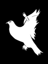
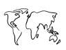
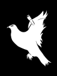
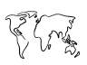

Wir sind Schüler des Politikkurses des 13. Jahrgangs an der IGS Bad Salzdetfurth und beschäftigten uns im Rahmen des Politikunterrichts mit der Thematik: Friedenssicherung als nationale und internationale Herausforderung. Im Zuge dessen fiel uns als Kurs auf, dass Krieg nicht etwa eine Gegebenheit ist, die es nur in weit entfernten Ländern gibt, sondern eine, die uns auch hier in Europa und Deutschland betreffen kann. Doch uns Schülern liegt der Frieden am Herzen, denn egal wo Krieg geführt wird und wo Menschen darunter leiden müssen, am Ende nützt er niemandem und schadet vielen. Daher wollen wir mit unserem Projekt ein Zeichen gegen diese Missstände in der Welt setzen. Unsere Politiklehrerin erzählte uns vom Europäischen Wettbewerb. Es handelt sich um ein Projekt der Europäischen Union und setzt sich in diesem Jahr im Modul „Sonderaufgaben“ mit der Thematik „Frieden [stiften]“ auseinander. Aufgrund des passenden Themas aus dem Unterricht und unseres generellen Interesses, uns für den Frieden auszusprechen, beschlossen wir als Kurs an dem Wettbewerb teilzunehmen. Uns geht es allerdings nicht nur um den Wettbewerb selbst, sondern vielmehr um die Idee, auch als junger Mensch einen kleinen Beitrag zum Thema Frieden zu leisten. Unser Projekt trägt daher den Titel „Wir schicken Frieden um die Welt“. Unsere Idee ist es, Postkarten an wichtige Persönlichkeiten, wie beispielsweise Minister und andere Politiker zu schicken, die mit dem Thema Frieden oder auch Krieg in Kontakt stehen. Hierbei verwenden wir eigene gestaltete Briefmarken und Motive, die unser Anliegen zum Ausdruck bringen sollen. Außerdem enthält jede Karte einen Text, der aufzeigt, wie wichtig die Problematik ist und wie katastrophal die Situation für viele Menschen ist.
Mit dieser Website wollen wir weitere Denkanstöße zum Thema Frieden teilen und auch Sie dazu bewegen sich mit dem Frieden in unserer Welt zu befassen.

 


